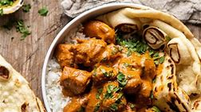

Coconut Chicken Tikka Masala

Ingredients
Switch to Steps
-
1 Yellow Onion (medium, quartered)
-
1 Shallot
-
6 Garlic Cloves
-
2 1" Fresh Ginger Roots
-
1 tsp Garam Masala
-
2 tsp Tumeric
-
2 tsp Salt
-
1 tsp Red Pepper Flakes
-
Lemon Zest
-
2 lb Boneless, Skinless Chicken Breasts
-
1/2 cup Greek Yogurt
-
1 can Unsweetened Coconut Milk
-
6 oz Tomato Paste
-
1/4 cup Fresh Cilantro, chopped
-
3 cups Rice, cooked
Steps
Switch to Ingredients
Curry Paste
In a blender or food processor, combine the onion, shallot, garlic,
garam masala, turmeric, salt, red pepper flakes, and lemon zest
and pulse until a smooth paste forms, about 1 minute.
Chicken
-
In a gallon-sized zip-top bag, combine 2 Tbsp of the curry paste,
the chicken, and the yogurt.
Seal the bag and massage the mixture
into the chicken to cover completely.
Marinate at room temperature
for 30 minutes or over night.
-
Heat a large, high-sided skillet over medium-high heat.
-
Add 1/4 cup of the curry paste and cook until fragrant, about 1 minute.
-
Stir in the marinated chicken, coconut milk, and tomato paste.
Cover and cook until the chicken is cooked through, about 15-20 minutes.
-
Remove the lid and simmer until the sauce thickens slightly,
about 5 minutes more.
-
Stir in the cilantro.